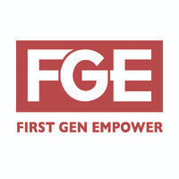

First Gen Empower
Expanding Educational Opportunity for Undocumented and First-Generation Students
First Gen Empower is a nonprofit that works to expand educational opportunity for undocumented, first-generation, and low-income students. It helps educators, counselors, and institutions build more informed and inclusive pathways through training, workshops, consulting, and public resources.
How First Gen Empower helps
Practical support for students and the people who advise them.
- Educator training
- Undocu-Ally workshops
- BRIDGE certification
- Institutional consulting
- Student workshops
- Advising guides
- Mixed-status family resources
- Career resources
- Educational resources
- Policy resources
- First-generation stories
Why we are highlighting this organization
Stories can open a door to support.
Project Second Voice believes storytelling should also help people find organizations that can support their futures. After learning more about First Gen Empower's work, we wanted to make its educational resources easier for students, families, and educators to discover.
Featured resources
Start with the support most useful to you.
External resources open on the official First Gen Empower website.